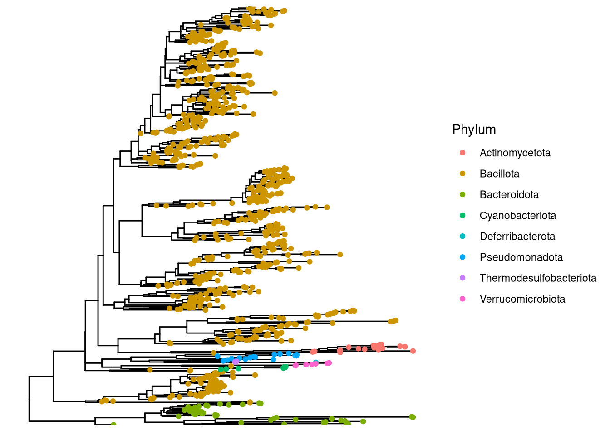

# Load Packages
pacman::p_load(phyloseq, ggtree, patchwork, tidytree, phytools, tidyverse, install = TRUE)Making Our Phylogenetic Tree
Load Packages and Functions
Load data
# Load in the raw_phyloseq data from DADA2_workflow.Rmd
load("clean_barlow_phylo.RData")
clean_barlow_phylophyloseq-class experiment-level object
otu_table() OTU Table: [ 885 taxa and 93 samples ]
sample_data() Sample Data: [ 93 samples by 15 sample variables ]
tax_table() Taxonomy Table: [ 885 taxa by 8 taxonomic ranks ]Write ASV Fasta file
# first pull taxonomic table from phyloseq object
# contains ASV and sequences
tax_table <- clean_barlow_phylo@tax_table %>% as.data.frame() %>%
select(ASV, ASVseqs)
# add > symbol to ASV names for file formatting
tax_table$ASV <- paste0(">",tax_table$ASV)
# bind ASVs and sequences together in one long character
seqs_fasta <- c(rbind(tax_table$ASV, tax_table$ASVseqs))
# write seqs_fasta out as a fasta file
write(seqs_fasta, file = "barlow_asvs.fasta")MAFFT for Alignment
This step aligns the ASV fasta from phyloseq_preprocessing and outputs an aligned fasta file. Note that you should be running this from the project’s home directory!
# Run MAFFT on file
# I am using auto options for now (instead of specifying arguments)
# MAFFT automatically recognizes that it is a nucleotide alignment
# Set seed (not sure if relevant but not taking chances)
RANDOM=31491
/programs/mafft/bin/mafft --auto --quiet barlow_asvs.fasta > aligned_asvs.fasta FastTree
This section of code takes the aligned fasta file and runs it through Fast Tree to output an unrooted tree. It also takes awhile. The end of the logfile will tell you relevant information on who the tree was built.
#add to path
export PATH=/programs/FastTree-2.1.11:$PATH
RANDOM=31491
FastTree -gtr -nt -fastest -quiet -log fasttree.log aligned_asvs.fasta > unrooted.treePlot with ggtree
First load tree and add to phyloseq object
# read tree file
tree <- read.tree("unrooted.tree") Rooting our tree
is.rooted(tree)[1] FALSE# Midpoint root
root_tree <- midpoint_root(tree)
is.rooted(root_tree)[1] TRUE# Merge with our physeq
root_physeq <- merge_phyloseq(clean_barlow_phylo, root_tree)Found more than one class "phylo" in cache; using the first, from namespace 'phyloseq'Also defined by 'tidytree'Found more than one class "phylo" in cache; using the first, from namespace 'phyloseq'Also defined by 'tidytree'Found more than one class "phylo" in cache; using the first, from namespace 'phyloseq'Also defined by 'tidytree'Found more than one class "phylo" in cache; using the first, from namespace 'phyloseq'Also defined by 'tidytree'Found more than one class "phylo" in cache; using the first, from namespace 'phyloseq'Also defined by 'tidytree'Found more than one class "phylo" in cache; using the first, from namespace 'phyloseq'Also defined by 'tidytree'Found more than one class "phylo" in cache; using the first, from namespace 'phyloseq'Also defined by 'tidytree'# Plot
ggtree(root_physeq) +
geom_tippoint(aes(color = Phylum))Warning in psmelt(model): The sample variables:
Sample
have been renamed to:
sample_Sample
to avoid conflicts with special phyloseq plot attribute names.Found more than one class "phylo" in cache; using the first, from namespace 'phyloseq'
Also defined by 'tidytree'Found more than one class "phylo" in cache; using the first, from namespace 'phyloseq'Also defined by 'tidytree'Found more than one class "phylo" in cache; using the first, from namespace 'phyloseq'Also defined by 'tidytree'Found more than one class "phylo" in cache; using the first, from namespace 'phyloseq'Also defined by 'tidytree'
Okay, our tree looks good, There aren’t any crazy long branches that really worry me, or are unannotated.
Saving our final tree
save(root_physeq, file = "root_physeq.RData")Session Information
# Reproducibility
devtools::session_info()─ Session info ───────────────────────────────────────────────────────────────
setting value
version R version 4.3.3 (2024-02-29)
os Rocky Linux 9.5 (Blue Onyx)
system x86_64, linux-gnu
ui X11
language (EN)
collate en_US.UTF-8
ctype en_US.UTF-8
tz America/New_York
date 2025-09-04
pandoc 3.1.1 @ /usr/lib/rstudio-server/bin/quarto/bin/tools/ (via rmarkdown)
quarto 1.3.450 @ /usr/lib/rstudio-server/bin/quarto/bin/quarto
─ Packages ───────────────────────────────────────────────────────────────────
! package * version date (UTC) lib source
ade4 1.7-23 2025-02-14 [1] CRAN (R 4.3.3)
ape * 5.8-1 2024-12-16 [1] CRAN (R 4.3.3)
P aplot 0.2.8 2025-07-02 [?] CRAN (R 4.3.3)
Biobase 2.68.0 2025-04-15 [1] Bioconductor 3.21 (R 4.3.3)
BiocGenerics 0.54.0 2025-04-15 [1] Bioconductor 3.21 (R 4.3.3)
biomformat 1.30.0 2023-10-24 [1] Bioconductor
Biostrings 2.76.0 2025-04-15 [1] Bioconductor 3.21 (R 4.3.3)
cachem 1.1.0 2024-05-16 [1] CRAN (R 4.3.3)
cli 3.6.5 2025-04-23 [1] CRAN (R 4.3.3)
cluster 2.1.6 2023-12-01 [2] CRAN (R 4.3.3)
P clusterGeneration 1.3.8 2023-08-16 [?] CRAN (R 4.3.2)
P coda 0.19-4.1 2024-01-31 [?] CRAN (R 4.3.2)
codetools 0.2-19 2023-02-01 [2] CRAN (R 4.3.3)
P combinat 0.0-8 2012-10-29 [?] CRAN (R 4.3.2)
crayon 1.5.3 2024-06-20 [1] CRAN (R 4.3.3)
data.table 1.17.8 2025-07-10 [1] CRAN (R 4.3.3)
P DEoptim 2.2-8 2022-11-11 [?] CRAN (R 4.3.2)
P devtools 2.4.5 2022-10-11 [?] CRAN (R 4.3.2)
digest 0.6.37 2024-08-19 [1] CRAN (R 4.3.3)
P doParallel 1.0.17 2022-02-07 [?] CRAN (R 4.3.2)
dplyr * 1.1.4 2023-11-17 [1] CRAN (R 4.3.3)
P ellipsis 0.3.2 2021-04-29 [?] CRAN (R 4.3.2)
evaluate 1.0.5 2025-08-27 [1] CRAN (R 4.3.3)
P expm 1.0-0 2024-08-19 [?] CRAN (R 4.3.2)
farver 2.1.2 2024-05-13 [1] CRAN (R 4.3.3)
fastmap 1.2.0 2024-05-15 [1] CRAN (R 4.3.3)
P fastmatch 1.1-6 2024-12-23 [?] CRAN (R 4.3.2)
forcats * 1.0.0 2023-01-29 [1] CRAN (R 4.3.3)
foreach 1.5.2 2022-02-02 [1] CRAN (R 4.3.3)
fs 1.6.6 2025-04-12 [1] CRAN (R 4.3.3)
generics 0.1.4 2025-05-09 [1] CRAN (R 4.3.3)
GenomeInfoDb 1.44.2 2025-08-20 [1] Bioconductor 3.21 (R 4.3.3)
GenomeInfoDbData 1.2.14 2025-08-29 [1] Bioconductor
P ggfun 0.2.0 2025-07-15 [?] CRAN (R 4.3.3)
ggplot2 * 3.5.2 2025-04-09 [1] CRAN (R 4.3.3)
P ggplotify 0.1.2 2023-08-09 [?] CRAN (R 4.3.2)
ggtree * 3.16.3 2025-07-16 [1] Bioconductor 3.21 (R 4.3.3)
glue 1.8.0 2024-09-30 [1] CRAN (R 4.3.3)
P gridGraphics 0.5-1 2020-12-13 [?] CRAN (R 4.3.2)
gtable 0.3.6 2024-10-25 [1] CRAN (R 4.3.3)
hms 1.1.3 2023-03-21 [1] CRAN (R 4.3.3)
htmltools 0.5.8.1 2024-04-04 [1] CRAN (R 4.3.3)
P htmlwidgets 1.6.4 2023-12-06 [?] CRAN (R 4.3.2)
P httpuv 1.6.16 2025-04-16 [?] CRAN (R 4.3.3)
httr 1.4.7 2023-08-15 [1] CRAN (R 4.3.3)
igraph 2.1.4 2025-01-23 [1] CRAN (R 4.3.3)
IRanges 2.42.0 2025-04-15 [1] Bioconductor 3.21 (R 4.3.3)
iterators 1.0.14 2022-02-05 [1] CRAN (R 4.3.3)
jsonlite 2.0.0 2025-03-27 [1] CRAN (R 4.3.3)
knitr 1.50 2025-03-16 [1] CRAN (R 4.3.3)
labeling 0.4.3 2023-08-29 [1] CRAN (R 4.3.3)
P later 1.4.4 2025-08-27 [?] CRAN (R 4.3.3)
lattice 0.22-5 2023-10-24 [2] CRAN (R 4.3.3)
lazyeval 0.2.2 2019-03-15 [1] CRAN (R 4.3.3)
lifecycle 1.0.4 2023-11-07 [1] CRAN (R 4.3.3)
lubridate * 1.9.4 2024-12-08 [1] CRAN (R 4.3.3)
magrittr 2.0.3 2022-03-30 [1] CRAN (R 4.3.3)
P maps * 3.4.3 2025-05-26 [?] CRAN (R 4.3.3)
MASS 7.3-60.0.1 2024-01-13 [2] CRAN (R 4.3.3)
Matrix 1.6-5 2024-01-11 [2] CRAN (R 4.3.3)
memoise 2.0.1 2021-11-26 [1] CRAN (R 4.3.3)
mgcv 1.9-1 2023-12-21 [2] CRAN (R 4.3.3)
mime 0.13 2025-03-17 [1] CRAN (R 4.3.3)
P miniUI 0.1.2 2025-04-17 [?] CRAN (R 4.3.3)
P mnormt 2.1.1 2022-09-26 [?] CRAN (R 4.3.2)
multtest 2.58.0 2023-10-24 [1] Bioconductor
nlme 3.1-164 2023-11-27 [2] CRAN (R 4.3.3)
P numDeriv 2016.8-1.1 2019-06-06 [?] CRAN (R 4.3.2)
P optimParallel 1.0-2 2021-02-11 [?] CRAN (R 4.3.2)
P pacman 0.5.1 2019-03-11 [?] CRAN (R 4.3.2)
patchwork * 1.3.2 2025-08-25 [1] CRAN (R 4.3.3)
permute 0.9-8 2025-06-25 [1] CRAN (R 4.3.3)
P phangorn 2.12.1 2024-09-17 [?] CRAN (R 4.3.2)
phyloseq * 1.52.0 2025-04-15 [1] Bioconductor 3.21 (R 4.3.3)
phytools * 2.4-4 2025-01-08 [1] CRAN (R 4.3.3)
pillar 1.11.0 2025-07-04 [1] CRAN (R 4.3.3)
P pkgbuild 1.4.8 2025-05-26 [?] CRAN (R 4.3.3)
pkgconfig 2.0.3 2019-09-22 [1] CRAN (R 4.3.3)
P pkgload 1.4.0 2024-06-28 [?] CRAN (R 4.3.2)
plyr 1.8.9 2023-10-02 [1] CRAN (R 4.3.3)
P profvis 0.4.0 2024-09-20 [?] CRAN (R 4.3.2)
P promises 1.3.3 2025-05-29 [?] CRAN (R 4.3.3)
purrr * 1.1.0 2025-07-10 [1] CRAN (R 4.3.3)
P quadprog 1.5-8 2019-11-20 [?] CRAN (R 4.3.2)
R6 2.6.1 2025-02-15 [1] CRAN (R 4.3.3)
rappdirs 0.3.3 2021-01-31 [1] CRAN (R 4.3.3)
RColorBrewer 1.1-3 2022-04-03 [1] CRAN (R 4.3.3)
Rcpp 1.1.0 2025-07-02 [1] CRAN (R 4.3.3)
readr * 2.1.5 2024-01-10 [1] CRAN (R 4.3.3)
P remotes 2.5.0 2024-03-17 [?] CRAN (R 4.3.2)
reshape2 1.4.4 2020-04-09 [1] CRAN (R 4.3.3)
rhdf5 2.46.1 2023-11-29 [1] Bioconductor 3.18 (R 4.3.3)
rhdf5filters 1.14.1 2023-11-06 [1] Bioconductor
Rhdf5lib 1.24.2 2024-02-07 [1] Bioconductor 3.18 (R 4.3.3)
rlang 1.1.6 2025-04-11 [1] CRAN (R 4.3.3)
rmarkdown 2.29 2024-11-04 [1] CRAN (R 4.3.3)
rstudioapi 0.17.1 2024-10-22 [1] CRAN (R 4.3.3)
S4Vectors 0.46.0 2025-04-15 [1] Bioconductor 3.21 (R 4.3.3)
scales 1.4.0 2025-04-24 [1] CRAN (R 4.3.3)
P scatterplot3d 0.3-44 2023-05-05 [?] CRAN (R 4.3.2)
P sessioninfo 1.2.3 2025-02-05 [?] RSPM (R 4.3.3)
P shiny 1.11.1 2025-07-03 [?] CRAN (R 4.3.3)
stringi 1.8.7 2025-03-27 [1] CRAN (R 4.3.3)
stringr * 1.5.1 2023-11-14 [1] CRAN (R 4.3.3)
survival 3.5-8 2024-02-14 [2] CRAN (R 4.3.3)
tibble * 3.3.0 2025-06-08 [1] CRAN (R 4.3.3)
tidyr * 1.3.1 2024-01-24 [1] CRAN (R 4.3.3)
tidyselect 1.2.1 2024-03-11 [1] CRAN (R 4.3.3)
tidytree * 0.4.6 2023-12-12 [1] CRAN (R 4.3.3)
tidyverse * 2.0.0 2023-02-22 [1] CRAN (R 4.3.3)
timechange 0.3.0 2024-01-18 [1] CRAN (R 4.3.3)
P treeio 1.32.0 2025-04-15 [?] Bioconduc~
tzdb 0.5.0 2025-03-15 [1] CRAN (R 4.3.3)
UCSC.utils 1.4.0 2025-04-15 [1] Bioconductor 3.21 (R 4.3.3)
P urlchecker 1.0.1 2021-11-30 [?] CRAN (R 4.3.2)
P usethis 3.2.0 2025-08-28 [?] CRAN (R 4.3.3)
vctrs 0.6.5 2023-12-01 [1] CRAN (R 4.3.3)
vegan 2.7-1 2025-06-05 [1] CRAN (R 4.3.3)
withr 3.0.2 2024-10-28 [1] CRAN (R 4.3.3)
xfun 0.53 2025-08-19 [1] CRAN (R 4.3.3)
P xtable 1.8-4 2019-04-21 [?] CRAN (R 4.3.2)
XVector 0.48.0 2025-04-15 [1] Bioconductor 3.21 (R 4.3.3)
yaml 2.3.10 2024-07-26 [1] CRAN (R 4.3.3)
P yulab.utils 0.2.1 2025-08-19 [?] CRAN (R 4.3.3)
[1] /local/workdir/arp277/Pendleton_2025_Absolute_Unifrac_Paper/renv/library/R-4.3/x86_64-pc-linux-gnu
[2] /programs/R-4.3.3/lib64/R/library
* ── Packages attached to the search path.
P ── Loaded and on-disk path mismatch.
──────────────────────────────────────────────────────────────────────────────